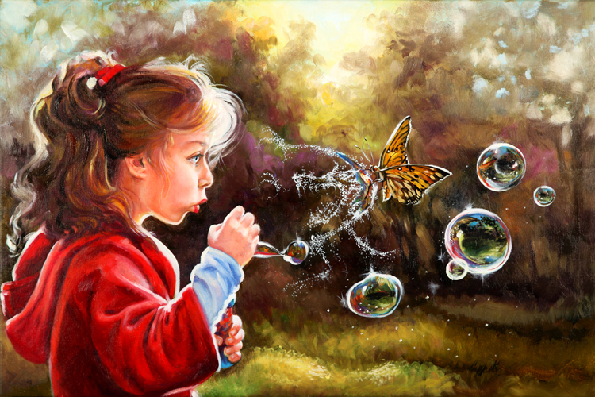
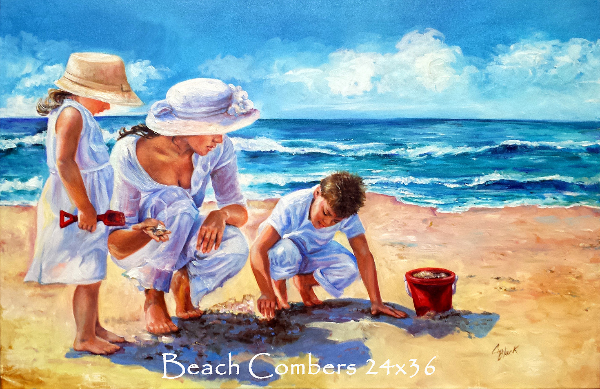

Enjoy my paintings!
Intuition changes everything" 30x20 - This is my little red riding hood painting. Through some of the worst encounters in life I have always been able to look back and find the signs that warned me before entering into the "deep dark woods". Sometimes I listened, sometimes I didn't. Either way I always found more than I started with. In this painting the butterfly is acting as her guardian angel; popping the bubble to reveal an apparition of the big bad wolf and hopefully touching a side of her intuition that spurs the conscience into that all too familiar "uneasy feeling".
"A Golden Moment" - 20x30- I wanted to capture the friendship we share with our pets in this painting. A golden retriever and a boy seemed to be the perfect concoction for the mood I was in at the time. Sometimes my dog seems to understand me more than I do myself.
Oil on Canvas original available, reprints available upon request as well. this picture is what the painting looks like in normal light. (daylight)
"Beachcombers" 36x24 - Some of my favorite moments growing up were with my mom and brothers on the beach. This was painted in the midst of some very rainy/cold days in Tacoma, Washington. It brought some sunshine into the room and leaked some on my heart.